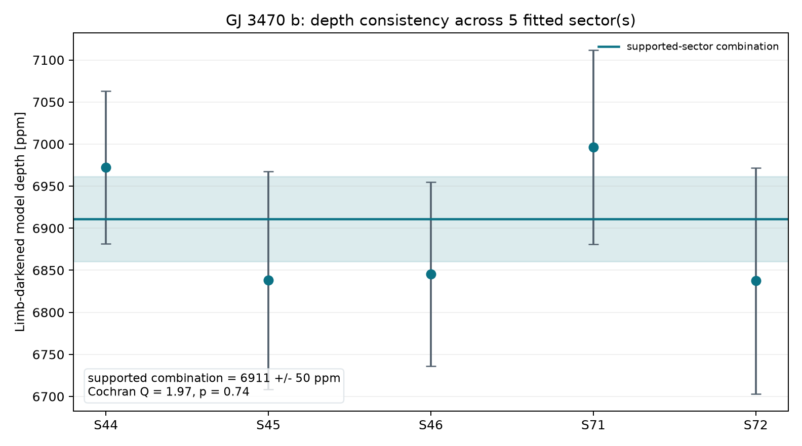
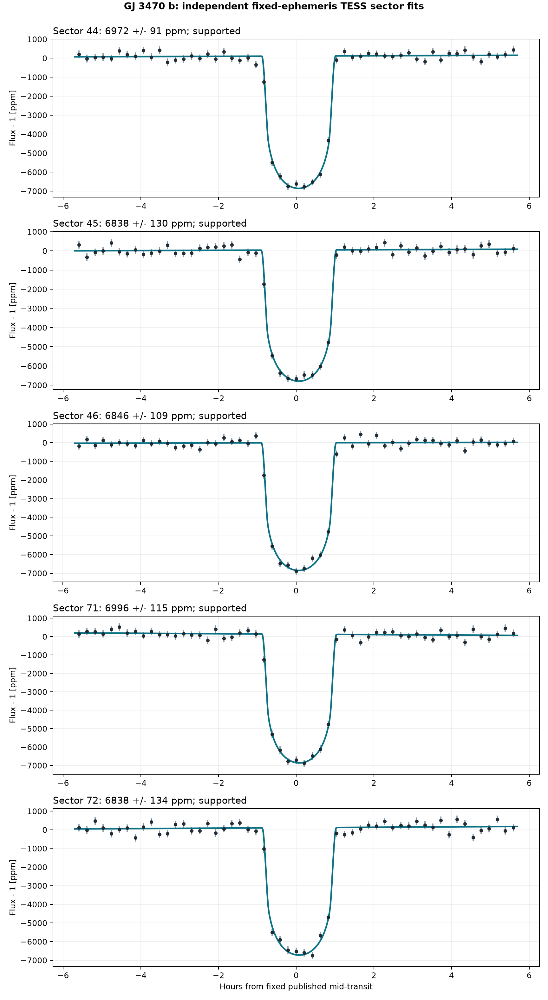

Data source notes
SHA-256, LF-normalised text
3ef839c8fa22e47a7648a611b349ca427644d70fdad7d18b64a21d8cf0392edcBrowse 13 versioned evidence files. Table previews simply display stored rows. Consult the project report for the source, processing steps, and inference assumptions.


3ef839c8fa22e47a7648a611b349ca427644d70fdad7d18b64a21d8cf0392edc| species | status | evidence | basis | source_label | source_url |
|---|---|---|---|---|---|
| SO2 | reported detection | >3 sigma | joint atmospheric retrieval | Beatty et al. 2024, ApJL | https://doi.org/10.3847/2041-8213/ad55e9 |
| H2O | reported detection | >3 sigma | joint atmospheric retrieval | Beatty et al. 2024, ApJL | https://doi.org/10.3847/2041-8213/ad55e9 |
| CO2 | reported detection | >3 sigma | joint atmospheric retrieval | Beatty et al. 2024, ApJL | https://doi.org/10.3847/2041-8213/ad55e9 |
| CH4 | reported detection | >3 sigma; underabundant | joint retrieval versus equilibrium expectation | Beatty et al. 2024, ApJL | https://doi.org/10.3847/2041-8213/ad55e9 |
5722225e4eb712fa7d187145c7d3cda0333893d520a34f9410c376de70e9e3da| pl_name | hostname | ra | dec | pl_orbper | pl_tranmid | pl_trandur |
|---|---|---|---|---|---|---|
| GJ 3470 b | GJ 3470 | 119.7735021 | 15.391209 | 3.3366496 | 2455983.70421 | 1.8984 |
4596f92acf41a5ccdb860b00aeb806ef8327cec220935829d221ffb69bc947b4b4dd4452c64df8e68bc5254cc079fb667dc73daee4a1d31c180b38a519ac716a14cab27749f150defe200e6c74292dd13e1b797ad2cea03832ee11b70ecf1642cdcd461255fac925255676e349f23eccaba08e8a448397e479d89bad919b64b273ba83b2785accd26cb52e96928ef48ff670bbe3773161ce05641072a3c809c1| quantity | value | unit |
|---|---|---|
| sector | 44 | TESS sector |
| period_days | 3.3366496 | days; NASA Exoplanet Archive |
| published_duration_hours | 1.8984 | hours; NASA Exoplanet Archive |
| a_over_rstar | 13.9554588665 | fixed from saved a and stellar radius |
9a00ef61e31dc638b786e8cc6ed0acc2136d0fa128103934840c84a012663a21| sector | filename | transit_events | n_points | transit_supported | delta_bic | timing_shift_hours |
|---|---|---|---|---|---|---|
| 44 | tess2021284114741-s0044-0000000019028197-0215-s_lc.fits | 7 | 2235 | True | 7853.561492 | 0.06517547739 |
| 45 | tess2021310001228-s0045-0000000019028197-0216-s_lc.fits | 7 | 2252 | True | 6749.996945 | 0.06654104944 |
| 46 | tess2021336043614-s0046-0000000019028197-0217-s_lc.fits | 7 | 2392 | True | 7517.83122 | 0.07075297786 |
| 71 | tess2023289093419-s0071-0000000019028197-0266-s_lc.fits | 6 | 2050 | True | 6675.750049 | 0.07887901189 |
1d10f5726ff3e3e76b2c7d26d874475704ec66b899839d30669860ec0d90c9bf075e6265341a68f0f84cc13e63f0460ba211c8e8992abc7b0d885c63f2b7c21a416eefef287e156508523d7b38081e2c7cc4c8a07c5545e0a8bc7060eb301945f6133c9de8fa7112fd746be7a64c58d07a943920da25840b707800f9e932dafc3d460e52530c01b34a1e550e8300d1cfd33e234febddbed985792807545adbfbSHA-256 values verify the stored files. They do not independently validate the scientific analysis. Rebuild this page with python scripts/evidence_catalog.py followed by python scripts/render_evidence_page.py.